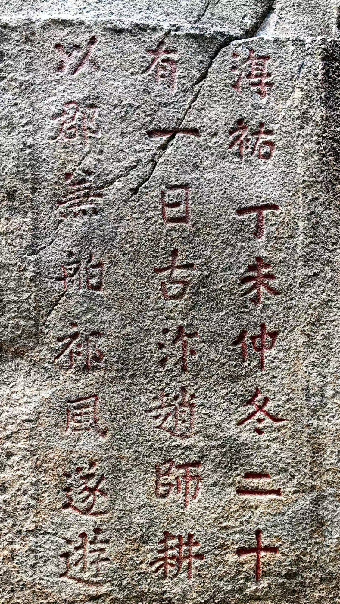
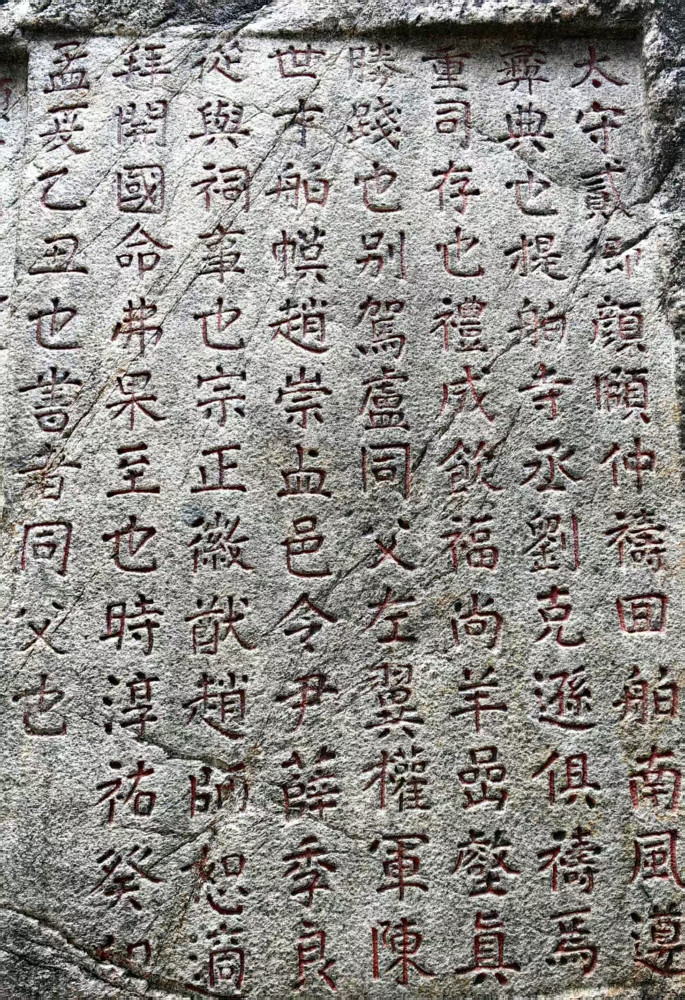
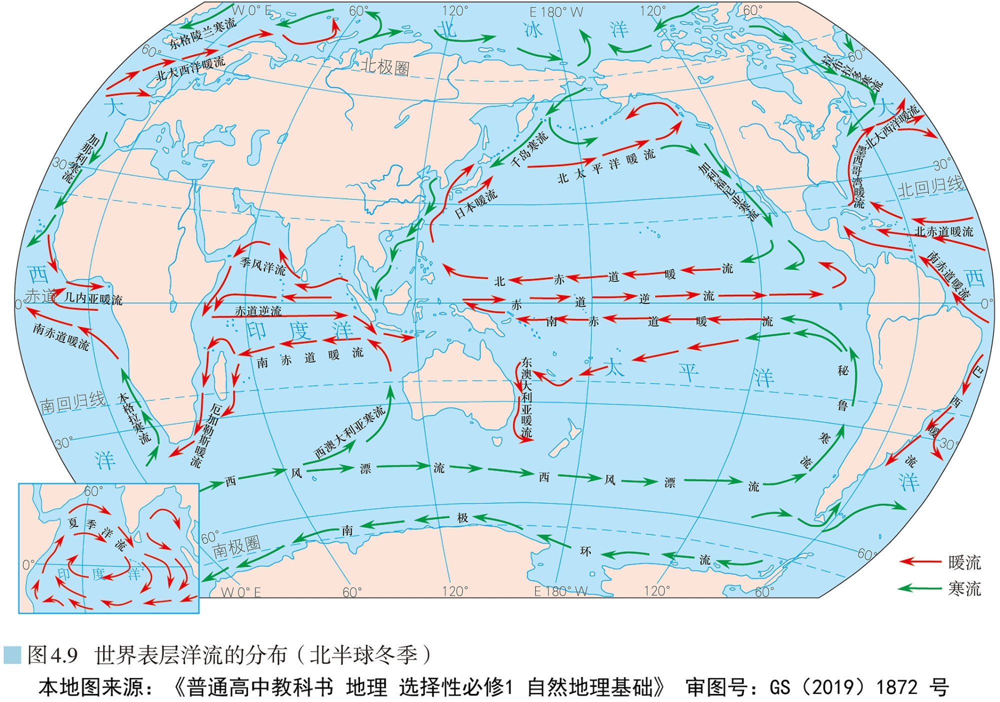
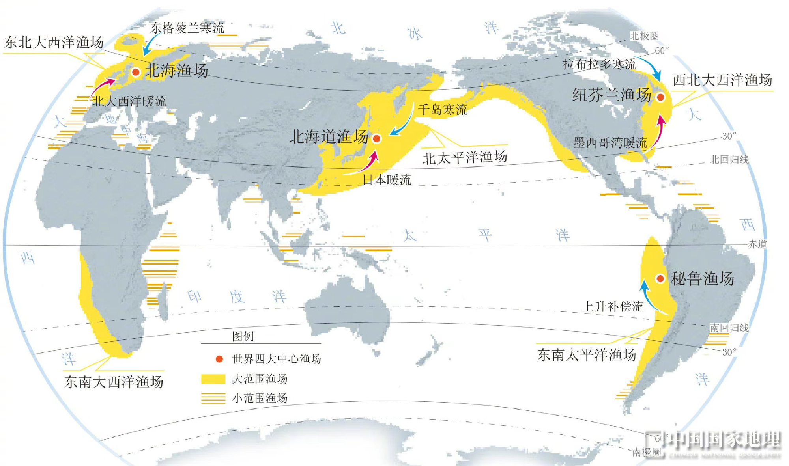

迷案初现 · 向阳号失联谜案
序幕 · 案情通报 —— 读懂案件，才能读懂这节课

冬 · 送船出洋｜淳祐丁未仲冬（1247 年冬）：赵师耕来游九日山——仲冬祈风，求东北风送船出洋下南洋

夏 · 接船回港｜淳祐癸卯孟夏（1243 年夏）：知州颜颐仲率市舶官员「祷回舶南风」——求南风迎商船满载归港
CASE FILE · 案情卷宗
1906 年 · 1 月（隆冬）
满载丝绸与瓷器的商船「向阳号」仿郑和船队旧例，在泉州候东北季风放洋，顺风顺流南下，驶往东南亚港埠驻泊候风。
入湾之后 · 时节无载
船队沿途驻泊候风、补给贸易，穿过马六甲海峡、驶入孟加拉湾，拟在沿岸补给、候冬季风再西行赴欧——却在湾域遭遇风暴，神秘失联。航海钟随浪停摆、日历散失——失联的具体时节，档案竟无任何记载。
百年之后
科考队在非洲东岸、索马里半岛沿海发现残骸与破损航海日志。
打捞日志 · 最后一页
"航海钟停了，日历随浪散去——不知漂了多久，也不知身在何季。船身不由己，只随一股看不见的大流漂去……获救时，已在万里之外的异邦海岸。"
—— 而最关键的一页：失联季节，恰好缺失
学生任务
全班化身「海洋侦探团」，分四支科考队。整节课跟随四张日志残页追踪失联航迹——每解开一个知识点，解锁一页日志；而最关键的失联季节，要靠你们自己拼出来。
三把没找到钥匙的锁
侦探守则：一切反常，都有地理规律在作祟。这三个问题，就是全案的入口——
残页一 · 看不见的推手
洋流是什么 —— 解开悬念②："推船的海流"到底是什么
日志 · 残页一
"船驶入风平浪静的海域，却依然不由自主地随海水向固定方向漂移……"
风平浪静 · 却在漂移 —— 力量不在风，在水本身
观察动态洋流图，归纳四个特征
不是季节性出现，而是年复一年
流速流向相对稳定，不忽东忽西
朝固定方向流动，不反复变换
宽数十至数百公里、深数百米
?屏幕滚动出现 6 条语句——逐条判断：这是不是洋流？每答对一条，点亮残页一角。
点击下方按钮开始判定…
残页二 · 暖寒有据
按性质分：暖流与寒流 · 按成因分：风海流 / 密度流 / 补偿流
日志 · 残页二
"船长笔记：我们在向北航行，按纬度海水本当渐渐变凉——可实测的水温，竟比航海图上同纬度海区标注的还要低……"
比同纬度应有的更冷 —— 不是纬度在作怪，是水本身偏冷
暖流
水温高 → 水温低从水温高的海域流向水温低的海域；一般由低纬流向高纬。
对沿岸气候：增温增湿
寒流
水温低 → 水温高从水温低的海域流向水温高的海域；一般由高纬流向低纬。
对沿岸气候：降温减湿
按成因分：三类洋流
① 风海流
受盛行风驱动，海水做大规模定向运动——最主要的成因，规模最大。
案例：西风漂流、信风漂流、北印度洋季风洋流（冬逆夏顺）
② 密度流
海水密度差异引起：表层海水由密度小的海区流向密度大的海区。
案例：直布罗陀海峡（大西洋 ⇄ 地中海）、红海与印度洋
③ 补偿流
海水流走、海面降低，附近海水流来补充；分水平补偿流与上升补偿流。
案例：秘鲁沿岸上升补偿流（离岸风驱动）
?船在向北航行，实测水温却明显低于航海图中同纬度海区的标注值——一股比周围海水更冷的水正在影响航线。向阳号最可能遇到了什么？
⚠ 残页二 · 背面 —— 两行潦草的字（本课最大反转）
"可怪了——按书上的道理，暖流该从低纬流向高纬、寒流该从高纬流向低纬。可海图标着：索马里沿岸冬季竟是暖流、夏季却是寒流，方向全反过来了？"
按刚学的"低纬暖、高纬寒"，这条记录自相矛盾——难道规律在索马里失效了？别急着下结论：光靠"分类"解不开这个谜，我们得站到更高的地方，看洋流在整个地球上怎么分布……
洋流地图 · 全球环流
世界洋流分布规律 —— 洋流像训练有素的军队：受盛行风指挥、被地转偏向力拐弯、被海陆轮廓挡路

主图＝北半球冬季环流；左下角小插图＝北印度洋「夏季洋流」——一张图看两季，对照「冬逆夏顺」
四大分布规律
为什么"训练有素"？
洋流受盛行风带指挥，被地转偏向力拐弯，被海陆轮廓挡住去路——最终绕成一个个有规律的大环流。
中低纬为什么"大陆东岸暖、西岸寒"？
?打捞报告：残骸集中发现于索马里沿岸（约北纬 8°，赤道以北）。向阳号 1 月（隆冬）候东北季风自泉州放洋，仿郑和旧例沿途驻泊候风——入湾失联的具体时节，档案无载。幸存水手回忆："航海钟停摆，不知漂了多久——只记得起初船先向东北漂了许多天；后来一场大风浪过后，天气一日日转凉、海风也渐渐转了向，船又随流一路向西南而去。" 结合北印度洋洋流判断：向阳号失联于哪个季节？
迷雾海域 · 规律的叛逆者
索马里沿岸："世界唯一具有季节性"的洋流 —— 冬暖夏寒之谜
日志 · 残页三 · 背面新增
"打捞到的海图标着——冬季，索马里沿岸是暖流；夏季，这里却是寒流……"
同一个地方 · 洋流性质随季节反转 —— 它既是规律的叛逆者，又是规律的忠实信徒
?冬季（1 月），索马里沿岸的洋流性质是——
残页三 · 海流的指纹
洋流对气候 · 渔场 · 航行 · 污染的影响 —— 洋流从不孤立，它的影响写在海岸上
日志 · 残页三
"索马里沿岸海雾弥漫、鱼群密布，可岸边却是贫瘠的沙漠……"
同一段海岸 · 三种完全相反的景象 —— 这就是洋流的"指纹"
⚠ 视频文件未找到：请将视频文件命名为 ocean-impact.mp4 放入本课件 assets/ 文件夹后刷新
① 影响气候
增温增湿 / 降温减湿暖流增温增湿：西欧温带海洋性气候得益于北大西洋暖流。
寒流降温减湿：索马里 / 东非沿岸荒漠与海雾——夏季寒流 + 上升流易生雾、少雨成荒漠。
② 影响海洋生物（渔场）
饵料上泛 → 鱼群集中寒暖流交汇→ 饵料丰富：纽芬兰、北海道、北海渔场。
上升流→ 营养盐上涌：秘鲁渔场；夏季索马里上升流亦成渔场。
③ 影响航行
顺流加速 · 逆流减速顺流省时省燃料，逆流费时费燃料；寒暖流交汇处多海雾（能见度低）；高纬寒流携带冰山（航行危险）。
④ 影响污染
一体两面有利：加快原污染海域净化速度；不利：扩大污染影响范围，漂浮垃圾随流汇聚成"海洋垃圾带"。

读图任务：四个红点（北海 · 北海道 · 纽芬兰 · 秘鲁）分别落在什么位置？——前三者都在寒暖流交汇处（对照蓝/品红箭头相遇点），秘鲁独居南美西岸上升补偿流处（青色箭头）；再找找索马里沿岸——夏季上升流，同款渔场
?残页三记载的"海雾弥漫 + 鱼群密布 + 沿岸沙漠"——这组"指纹"对应的洋流作用是？
残页四 · 终极对决
失联真相 PK 赛 —— 四支科考队并成两大阵营、讲台两席对决，答对推进"还原真相"进度条
① 分组 · 科考队
全班四支科考队就近合并为两大阵营（1、2 队 ↔ 3、4 队），各占一个讲台对决席。点击输入框修改阵营名（对局中也可改）；抢答键为键盘 1 / 2。
② 规则
怎么玩（给老师）
读题后点「开始计时」。
哪队先抢到就点该队「抢答」（或按键盘 1 / 2）。
该队口头作答，老师点选项判定对 / 错；说理题由老师判分。
点「公布答案」展开解析——每答对一题，真相还原 +1 格。
本局结束
战绩揭晓
错题讲解 · 老师统一复盘
全部答对，太厉害了。
结案陈词 · 真相只有一个
四页日志合一 —— 向阳号失联百年的真相，现在揭晓
四页日志 · 拼合完整航海图
依次点击下方三段真相陈述，或点「一键揭示」——
结案证词 · 三段真相
不是神秘力量——是一支听风指挥的季风洋流：风往哪吹，表层海水就往哪流，失去动力的船就往哪漂。"向阳号"百年谜案的答案，就写在北印度洋"冬逆夏顺"的环流规律里。
季节铁证（两段漂流）——日志载船"先向东北漂了许多天；大风浪过后天气转凉、海风渐转，又随流向西南"：向东北＝夏季顺时针推船，锁定失联于夏；那场大风浪是 10—11 月季风转换期孟加拉湾气旋的写照——气旋过后东北季风渐次建立、天气转凉，环流反转为冬季逆时针，把船调头向西南、横穿阿拉伯海送抵索马里（风向反转靠的是季节渐变，非一场风浪之功）。残骸在西岸，正是跨季节漂流与"冬逆夏顺"的铁证。
洋流的指纹——海雾、渔场、沿岸沙漠，甚至索马里"冬暖夏寒"的温度记录，都是这股洋流留下的证据。洋流不是神话，是规律。读懂分布图，就能读懂一片海域的"性格"。
知识框架 · 一节课连成一张图
一定方向 · 大规模
（看水温对比！）
补偿
冬逆夏顺（印度洋）
向岸堆 / 离岸抽
航行 · 污染
课后任务
绘制「世界洋流分布简图」：标出四大环流圈方向、西风漂流、北印度洋冬夏两套箭头，并用红蓝笔区分暖流与寒流。
呼应
"洋流不是神话，是规律。
读懂分布图，就能读懂一片海域的性格。"